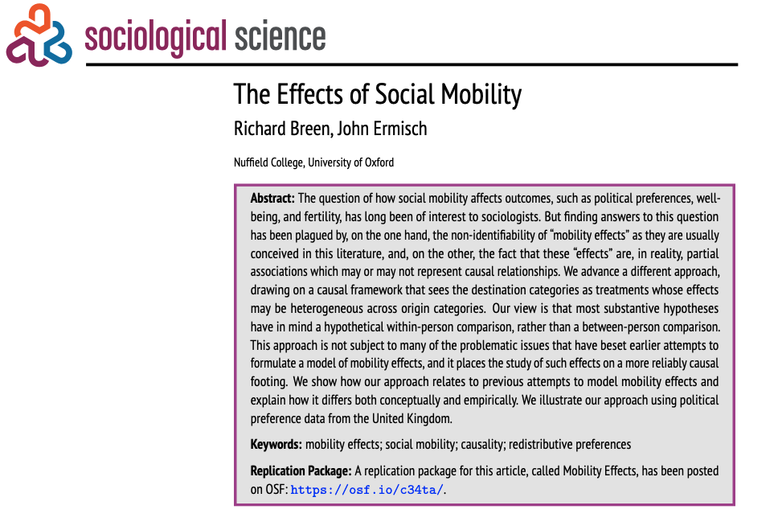

La justificación de la desigualdad salarial
El rol de la movilidad social intergeneracional en Chile
Andreas Laffert1,2
1Instituto de Sociología, Pontificia Universidad Católica de Chile
2Centro de Estudios de Conflicto y Cohesión Social - COES
Seminario Estratificación Social - SOL3016
3 Septiembre 2025, Santiago
Contexto y motivación
Contexto y motivación: Mobility effects

- Los efectos de la movilidad —definidos como los resultados derivados del desplazamiento entre las clases de origen y destino (Helgason & Rehm, 2025)— han suscitado desde hace tiempo el interés sociológico
- Breen & Ermisch (2024) proponen un método para estimar el efecto (causal) de la movilidad social intergernacional sobre un outcome
- Las investigaciones sobre la movilidad social intergeneracional han examinado cada vez más sus efectos en las actitudes hacia la desigualdad
Contexto y motivación: legitimidad de la desigualdad
Desde los 80’s, la desigualdad económica y la concentración de la riqueza han aumentado en el mundo (Chancel et al., 2022).
¿En qué medida la desigualdad económica es vista como justa por las personas?
La investigación empírica sobre la justicia distributiva estudia las concepciones de los individuos sobre cómo debe ser la distribución (G. Jasso et al., 2016)
Esta línea de investigación permite examinar hasta qué punto la desigualdad económica se percibe como justa o, en cierto sentido, legítima (Castillo, 2011) –> legitimidad de la brecha salarial
Antecedentes
Brecha salarial
- Niveles de desigualdad económica y marcos institucionales (Castillo, 2011; Hadler, 2005)
- Estatus socioeconómico objetivo (Guillermina Jasso & Jr., 1999; Kelley & Evans, 2021)
- Las percepciones de desigualdad e ideologías (Willis et al., 2015)
Movilidad social
- Preferencias redistributivas (Alesina et al., 2018; Ares, 2020; Breen & Ermisch, 2024; Schmidt, 2011)
- Legitimidad de la desigualdad económica (Gugushvili, 2016), gasto público (Gugushvili, 2017) y creencias sobre la desigualdad (Bucca, 2016; Day & Fiske, 2017)
- Diversos mecanismos explicativos: self-interest, socialización y atribuciones (Helgason & Rehm, 2025)
Contexto chileno
Chile presenta uno de los niveles de desigualdad más altos de América Latina y de los países de la OCDE (Flores et al., 2020)
Movilidad ascendente de corto alcance entre clases bajas y medias adyacentes, aunque siguen existiendo fuertes barreras para alcanzar posiciones más altas (Espinoza et al., 2013; Torche, 2014)
Castillo (2011) estudia la legitimidad de la desigualdad económica en Chile mediante la brecha salarial justa. Sus hallazgos revelan que
- el estatus socioeconómico (ingresos y educación) no influyen en la brecha salarial justa
- la percepción de desigualdad o valores igualitarios/individualistas sí influyen
Problematización
Aunque está claro que la posición social influye, la cuestión de cómo la movilidad ascendente o descendente dentro de la estructura social afecta a la justificación de la desigualdad salarial sigue sin respuesta
En Chile, hay pocos estudios sobre la justificación de la desigualdad salarial y aún menos sobre los efectos de la movilidad en las actitudes hacia la desigualdad
Este estudio
¿En qué medida la movilidad social intergeneracional afecta la justificación de la desigualdad salarial en Chile?
Hipótesis
\(H_{1}\): Experimentar movilidad social ascendente (descendente) se asocia positiva (negativamente) con una mayor justificación de la desigualdad salarial.
\(H_{2}\): Las creencias meritocráticas son un mecanismo a través del cual opera el sesgo egoísta y conduce a diversos grados de justificación de la desigualdad salarial
Datos, variables y métodos
Datos
- Datos
Variables
:::
Métodos
- Métodos
Gracias por su atención!
- Github del proyecto: https://github.com/Andreas-Lafferte/mobility-market-justice